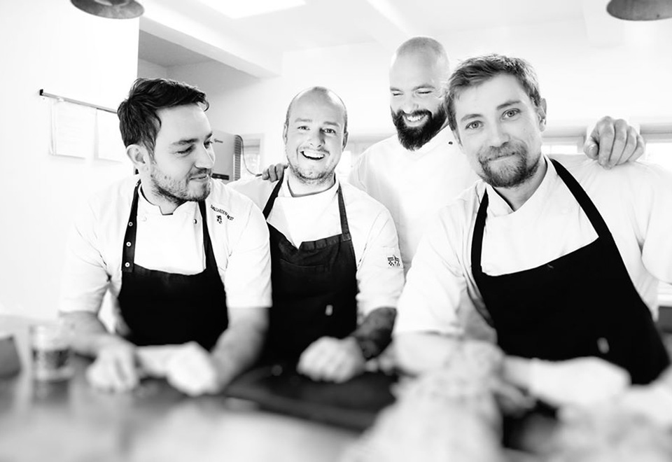

I 1952 blev den smukke købmandsgård genopført på hjørnet af Thorsens Allé og Svalegårdsvej. Købmandsgården blev derfor døbt Svalegaarden. Den idylliske gård står til stadighed på samme adresse, og har sat rammen for mange begivenheder og oplevelser
gennem årene.
I juni 2016 fik Svalegaarden nye forpagtere med ny gejst og lysende håb for fremtiden - Mette og Stefan fra det tidligere Restaurant Mest.
Mette og Stefan kommer med nye kræfter til- og friske øjne på
den smukke renoverede købmandsgård, som hidtil har fungeret som selskabsforretning.

Svalegaarden Mest i dag
Mette og Stefan har en vision om at tage det bedste fra Restaurant Mest og videreføre det til gårdens smukke rammer i hjertet af Aalborg. Tankerne bag Svalegaarden Mest er gastronomi møder landlig idyl, hvor der er fokus på at skabe mindeværdige
oplevelser.
“Svalegaarden Mest er vidunderlig at arbejde med. De gamle bygninger
mærkes og giver os en naturlig ydmyghed og lyst til at bringe de gode
oplevelser videre til vores gæster. Vi har fundet os godt tilrette i Hasseris
arbejder med mange forskellige vinkler i gastronomien. Svalegaarden Mest
rummer alt lige fra private fester, mødefaciliteter, foredrag til mad ud af
huset” - Mette og Stefan